Capítulo 1 · microcontenidos
Brandooers SkillUp · «Tu tienda vende más» · estreno lunes 2-nov-2026, 17:00 (Madrid). Horas en hora de Madrid.
Listo para publicar ya (validado, sin publicar)
Capítulo público desde el 29-oct: https://www.youtube.com/watch?v=xOx3j_BtZZY. Zernio los ha validado; la publicación está pendiente de permiso.
Ya está fuera el capítulo 1 de «Tu tienda vende más»: los cuatro pasos por donde se escapa una venta online y una prueba de diez minutos para cada uno.
https://www.youtube.com/watch?v=xOx3j_BtZZY&utm_source=facebook&utm_medium=social&utm_campaign=tvm-cap01&utm_content=c01-fb-p1
Vídeo con mi avatar creado con IA.
Ya está fuera el capítulo 1 de «Tu tienda vende más».
Una venta online pasa por cuatro pasos: encontrar, entender, comprar y pagar. En el capítulo vemos la señal que delata cada uno en tus números, una prueba de diez minutos para hacerla tú solo y el arreglo.
¿En cuál de los cuatro se le escapa la venta a tu tienda?
#ecommerce #tiendaonline
Vídeo con mi avatar creado con IA.
Primer comentario: El capítulo completo: https://www.youtube.com/watch?v=xOx3j_BtZZY&utm_source=linkedin&utm_medium=social&utm_campaign=tvm-cap01&utm_content=c01-li-p1
(historia: solo imagen, sin adhesivos)
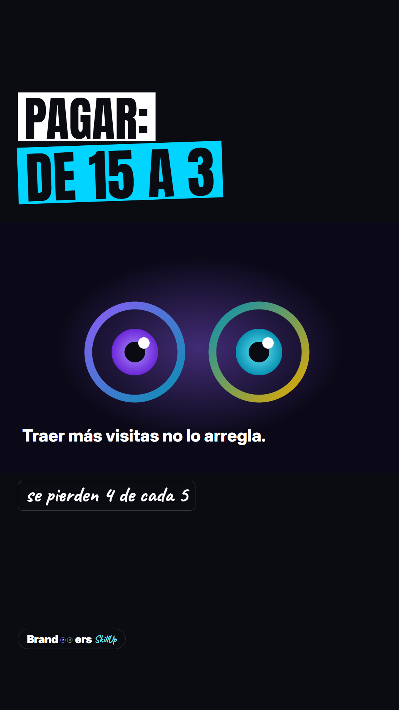
(historia: solo imagen, sin adhesivos)
Ya está: el capítulo 1 de «Tu tienda vende más».
Va de lo que más se repite en una tienda online: hay visitas, pero no hay ventas. Los cuatro pasos por donde se escapa una venta (encontrar, entender, comprar y pagar) y una prueba de diez minutos para cada uno.
El capítulo completo, en YouTube: enlace en la bio.
#tiendaonline #ecommerce #ventasonline
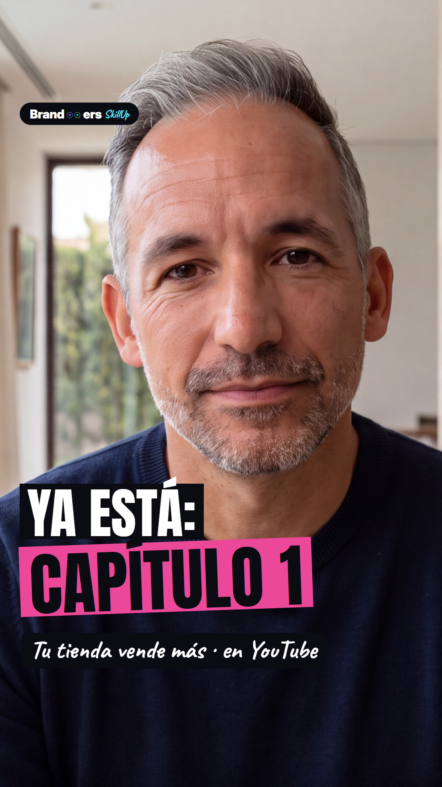
Ya está disponible el capítulo 1 de «Tu tienda vende más»
Ya está disponible el capítulo 1 de «Tu tienda vende más»: por qué tu tienda tiene visitas y no vende. Busca SkillUp Brandooers en YouTube.
#tiendaonline #ecommerce #emprender
La imagen es mi avatar creado con IA.
Programado en Zernio
Post 6ae323b3af3ce686a185e37d · estado «scheduled» · 2026-11-04T10:00:00.000Z UTC · etiqueta de IA de Instagram activada
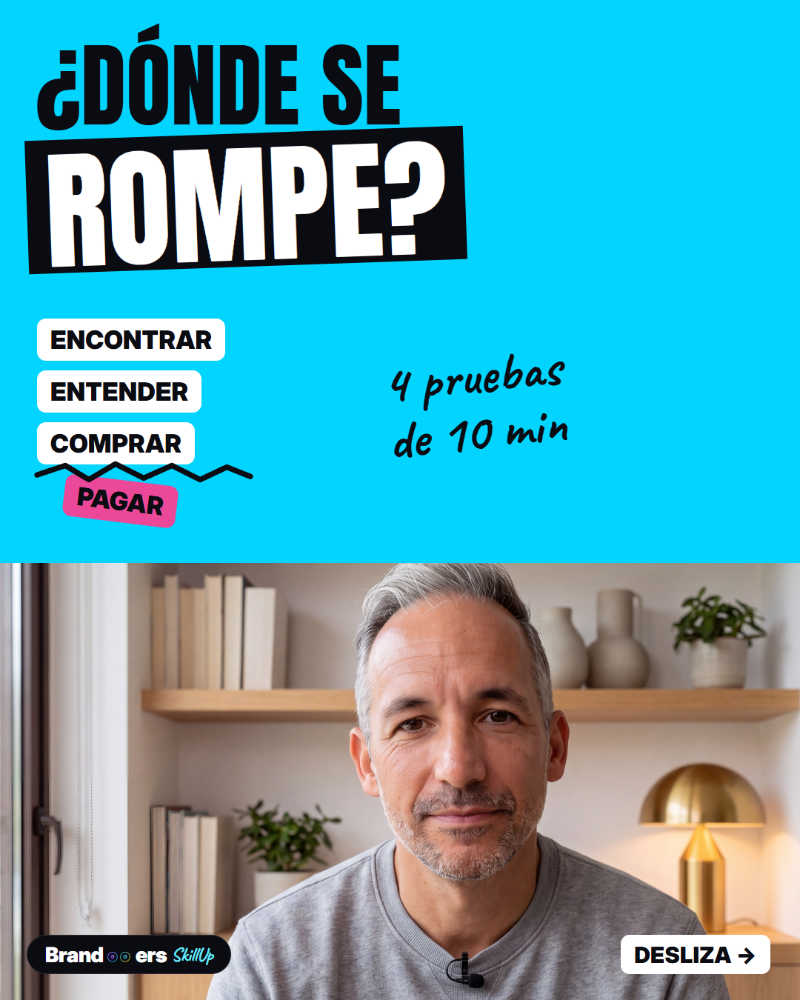
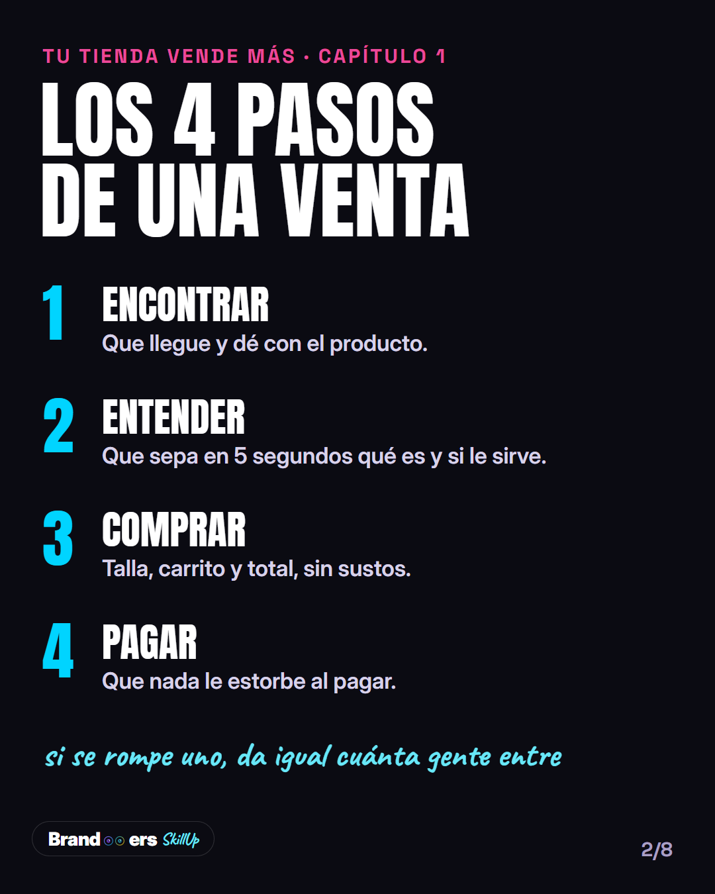
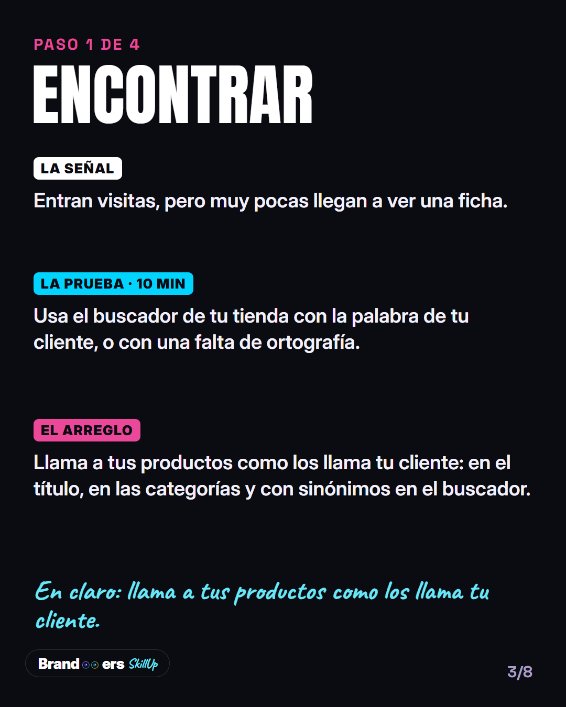
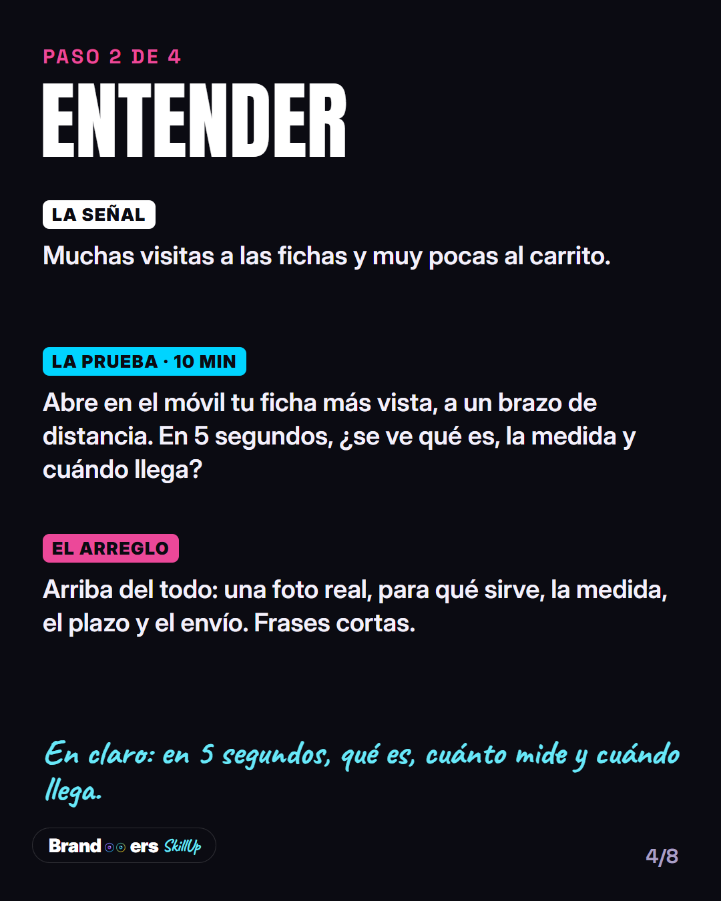
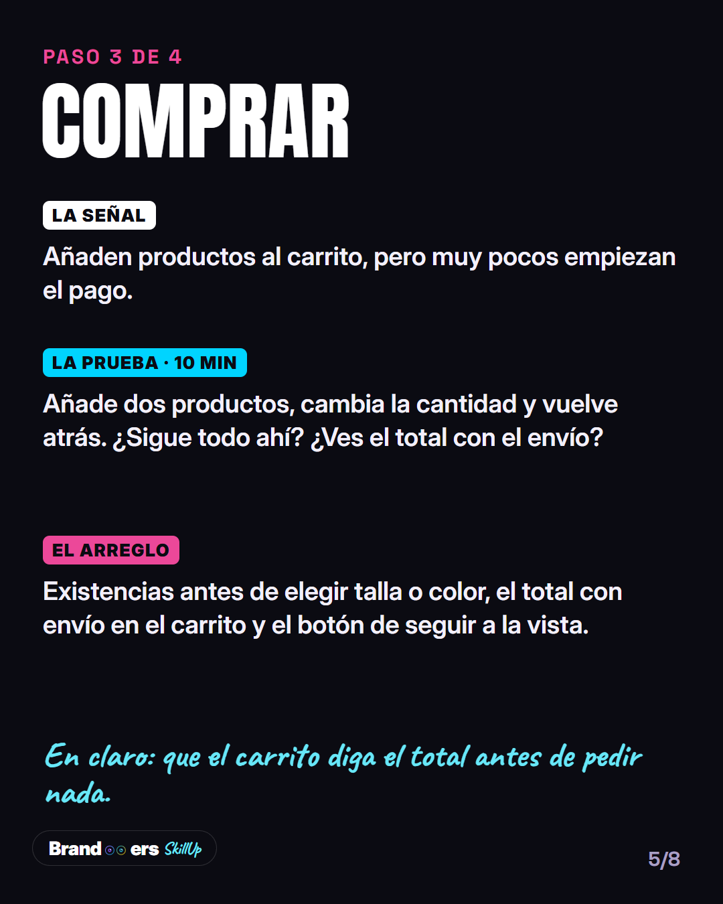
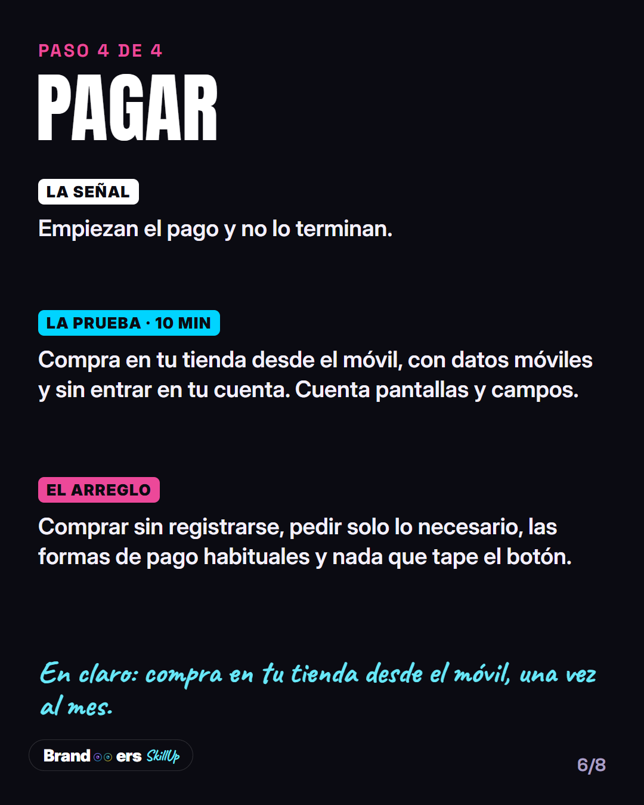
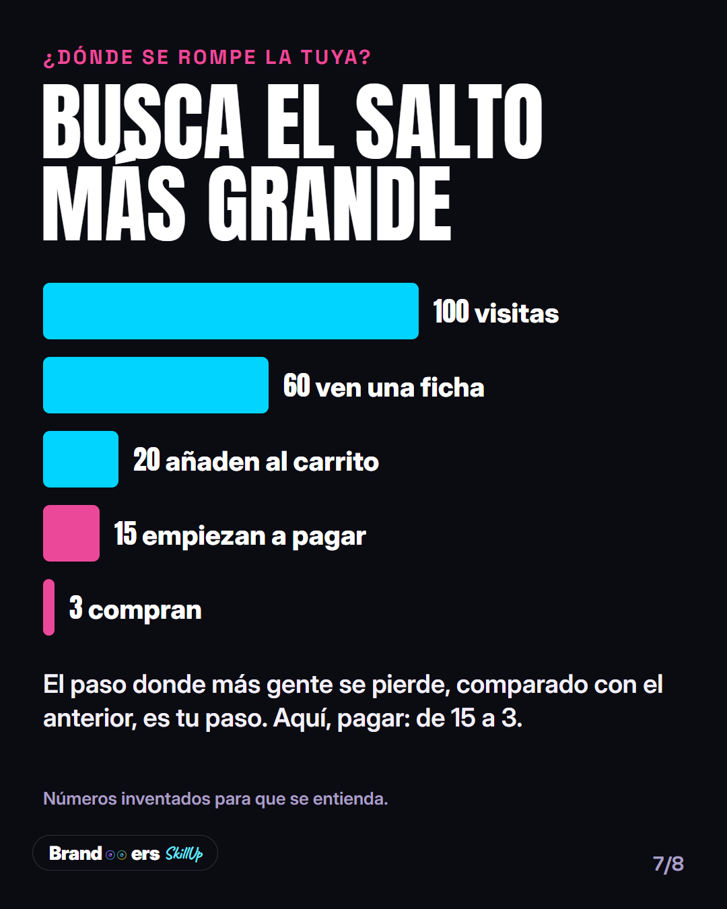
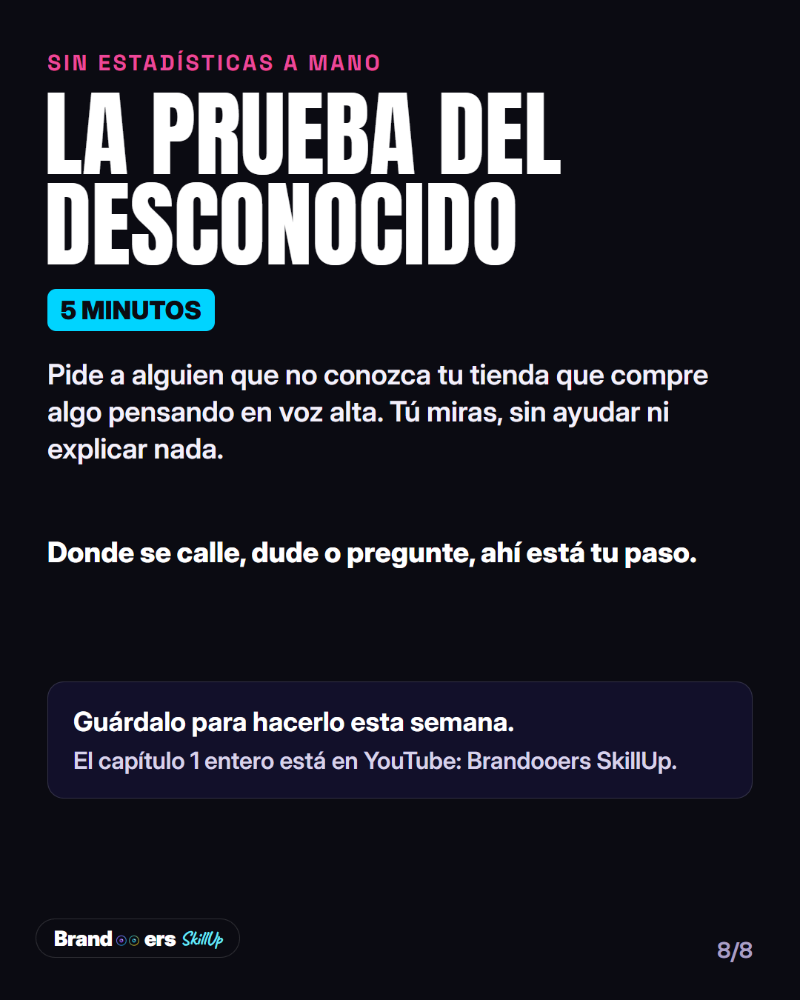
Cuatro pruebas de diez minutos, una por paso: encontrar, entender, comprar y pagar.
Guárdalo para el día que te sientes a revisar tu tienda. Y si solo tienes tiempo para una, empieza por comprar en tu tienda desde el móvil.
El capítulo entero, en YouTube (enlace en la bio).
#tiendaonline #ecommerce #ventasonline
Para Marc, a mano en su perfil de LinkedIn
Cuando una tienda online no vende, casi siempre se pide lo mismo: más visitas.
Y muchas veces es justo lo que no hace falta.
Una venta online pasa por cuatro pasos: encontrar, entender, comprar y pagar. Si se rompe uno, da igual cuánta gente entre: se va por el mismo sitio.
Un ejemplo con números inventados para que se entienda. De cada 100 visitas, 60 ven una ficha, 20 añaden algo al carrito, 15 empiezan a pagar y 3 compran. El salto grande no está en las visitas. Está en el pago: se pierden 4 de cada 5.
Ahí, pagar anuncios para traer más gente es pagar por visitas que se van por el mismo agujero.
Por eso el primer capítulo de "Tu tienda vende más" va de esto: en cada paso, una señal en tus números, una prueba de 10 minutos que puedes hacer tú solo y el arreglo.
Mi favorita es la del final, la prueba del desconocido: alguien que no conoce tu tienda compra algo pensando en voz alta mientras tú miras sin ayudar. Donde se calla o duda, ahí está tu paso.
¿En cuál de los cuatro pasos crees que se le escapa la venta a tu tienda, y qué te hace pensarlo?
El capítulo completo, en el primer comentario.
En el vídeo aparezco con un avatar y una voz generados con IA a partir de mi imagen y mi voz.
#ecommerce #tiendaonline #ventasonline
Primer comentario: El capítulo: <enlace del capítulo 1 en YouTube> (cuando el capítulo esté subido).
Descargar el PDF del documento · título sugerido del documento: «4 pruebas de 10 minutos: dónde se rompe tu tienda».
Te dejo las cuatro pruebas del capítulo en un documento, para guardarlo y hacerlas con calma.
Una por paso: encontrar, entender, comprar y pagar. Cada una se hace en 10 minutos, sin herramientas y sin pedir ayuda a nadie.
Si solo tienes tiempo para una, haz la del pago: compra en tu propia tienda desde el móvil, con datos móviles y sin entrar en tu cuenta. Es el paso que más duele, porque esa persona ya había decidido comprar.
¿Cuál vas a hacer primero esta semana?
#ecommerce #tiendaonline
Historias como imagen, sin adhesivos
Sin cuenta atrás ni test: la API no pone adhesivos. Programadas en Zernio como imagen sola.
Post 6ae3241c45314e029a35e8c5 · 2026-11-01T20:00:00.000Z UTC
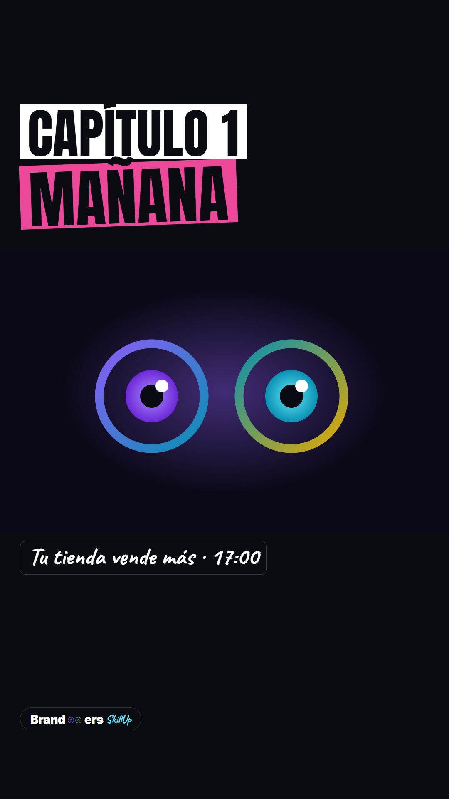
Post 6ae3241d5a8b63605bebacca · 2026-11-04T12:00:00.000Z UTC
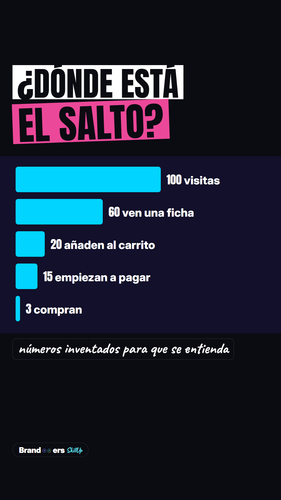
Esperan el enlace del capítulo en YouTube
| Pieza | Cuándo | Qué es |
|---|---|---|
| C01-IG-H3 | lun 2-nov 17:15 | Historia con enlace al capítulo |
| C01-FB-P1 | lun 2-nov 17:30 | Facebook, enlace al capítulo |
| C01-LI-P1 | lun 2-nov 17:30 | Página de LinkedIn, enlace en el primer comentario |
| C01-IG-H5 | mié 4-nov 13:05 | Historia con enlace al minuto 7:10 |
Vídeos: esperan el nuevo máster
Se cortarán del render «limpio» (sin subtítulos) del nuevo máster. Línea de IA donde la red no tenga casilla: «Vídeo con mi avatar creado con IA.»
| Pieza | Cuándo | Red | Tramos del capítulo (s) |
|---|---|---|---|
| C01-IG-R0 | dom 1-nov 20:30 | 0.12–21.50 | |
| C01-YT-S0 | lun 2-nov 19:00 | YouTube Short | 0.12–21.50 |
| C01-YT-S1 | mar 3-nov 13:00 | YouTube Short | 77.95–86.03 · 92.74–114.65 |
| C01-IG-R1 | mar 3-nov 20:30 | 77.95–86.03 · 92.74–114.65 | |
| C01-TT-1 | mié 4-nov 20:00 | TikTok | 77.95–86.03 · 92.74–114.65 |
| C01-YT-S2 | jue 5-nov 13:00 | YouTube Short | 158.84–174.50 · 183.33–195.12 · 224.09–228.95 |
| C01-IG-R2 | jue 5-nov 20:30 | 158.84–174.50 · 183.33–195.12 · 224.09–228.95 | |
| C01-YT-S3 | sáb 7-nov 13:00 | YouTube Short | 237.55–249.94 · 270.05–279.72 · 308.54–312.43 |
| C01-IG-R3 | sáb 7-nov 20:30 | 237.55–249.94 · 270.05–279.72 · 308.54–312.43 | |
| C01-TT-2 | dom 8-nov 20:00 | TikTok | 237.55–249.94 · 270.05–279.72 · 308.54–312.43 |